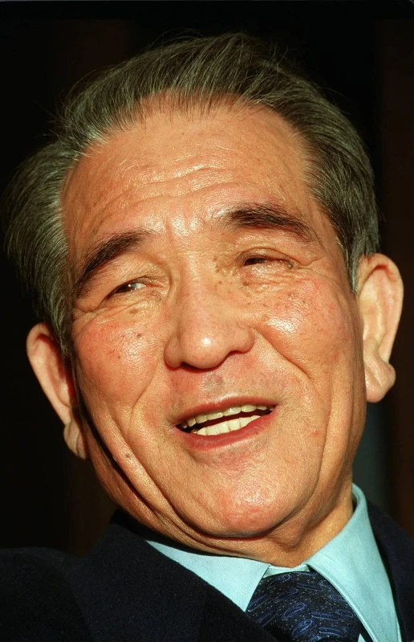

生平
德间康快(1921年10月25 日—2000年9月20日) ，日本著名电影人、德间书店社长、吉卜力工作室的创建者之一。 德间康快的名字总是和德间书店联系在一起，他的名字经常出现在吉卜力动画的片尾名单里。德间书店是德间康快旗下的公司，资助吉卜力工作室成立，发行了大量吉卜力以及宫崎骏，高畑勋的经典作品。 德间康快致力于日本动画片创作，全力支持名导演宫崎骏、高田勋拍片，推出了诸如《风之谷》、《龙猫》、《魔女宅急便》、《天空之城》、《萤火虫之墓》、《岁月的童话》等经典；另外，德间康快还帮助扶持新人导演的作品，比如《侧耳倾听》《猫的报恩》《听见涛声》等等。 其实德间康快并不是一位动画制作者，他平时很少过问吉卜力的事情，但是在有需要的时候，他总是站在第一线帮忙。当初将宫崎骏的漫画《风之谷》搬上银幕，正是他先见之明的决定，他还催生了一大批吉卜力经典的诞生，本人还担任了《千与千寻》的制作总指挥。 德间康快原为日本大阪《读卖新闻》社记者，1954年创办德间书店，后又向唱片业、电影业、报纸业等方面发展。中国观众熟悉和喜爱的《一盘没有下完的棋》，是德间康快主持的日本大映电影公司同中方合作完成的；张艺谋导演的《菊豆》也是中影、德间书店、西影厂共同投资拍摄的；另一部中日合拍片《敦煌》中，也含有德间康快的心血。大映电影公司的故事片《我们来跳舞》也在日本国内及海外创大卖座佳绩。从1991年起，德间康快连续八年担任东京国际电影节主席。 2000年9月20日下午六时，德间康快在东京去世，走完了他多姿多彩的电影人生，享年78岁。

事业
电影事业
德间康快于1974年以2亿日圆收购当时濒临破产的大映电影公司，之后将大映以“大映电影株式会社”（大映映画株式会社）新名称、成为德间书店底下专门拍摄电影的子公司。在动画事业方面，德间则在1985年协助当时拍摄完《风之谷》的宫崎骏、高畑勋等人成立了“吉卜力工作室”。
教育事业
1984年2月，母校逗子开成学园聘请德间康快担任学校的理事。因先前在1980年发生逗子开成学园的职员前往长野县白马村一带的八方尾根登山发生死亡事故，当时校方以此为教员私人旅行的理由拒绝向罹难家属赔偿，而德间上任时则协助了校方与家属的和解。文化事业
2000年4月1日德间康快在当时的东京都知事石原慎太郎的邀请下，担任东京都写真美术馆的馆长。在德间于当年逝世后则改由资生堂公司的会长福原义春担任。荣誉
参与作品
真人电影
电影动画
短篇动画
OVA动画
德间书店